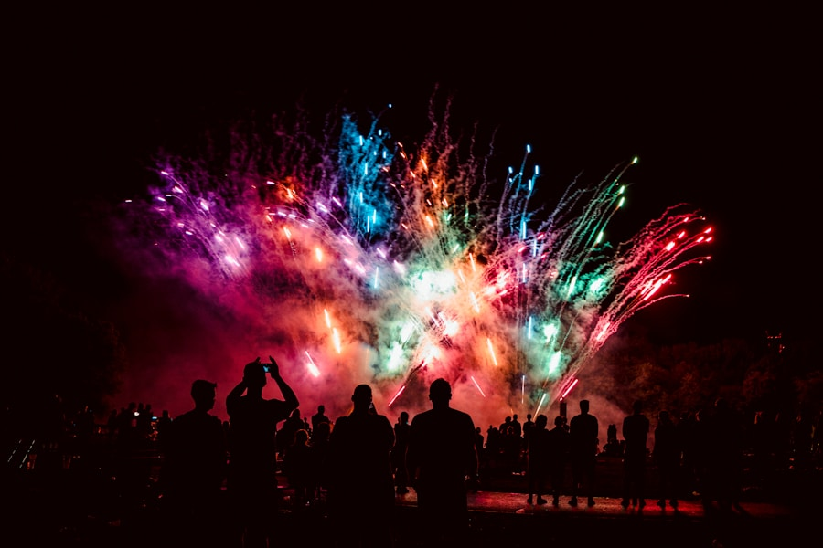

Die Stille danach
Eine Frau kehrt nach 20 Jahren in ihr Heimatdorf zurück — und trifft auf das Schweigen derer, die wussten. Ein düsteres Kammerspiel über kollektive Schuld.


Ich bin 1991 in Kabul geboren und mit sechs Jahren in die Schweiz gekommen. Diese Erfahrung — das Leben zwischen Kulturen, Sprachen und Identitäten — ist das Fundament meiner Arbeit.
Nach meinem Filmstudium an der Zürcher Hochschule der Künste (ZHdK) habe ich Spielfilme, Dokumentarfilme und Kurzfilme realisiert. Meine Geschichten handeln von Menschen an Grenzen — emotional, geografisch, politisch.
Ich lebe und arbeite in Zürich. Neben der Regie unterrichte ich Filmnarration an der ZHdK und bin Mentorin für aufstrebende Filmschaffende mit Migrationshintergrund.
Eine Frau kehrt nach 20 Jahren in ihr Heimatdorf zurück — und trifft auf das Schweigen derer, die wussten. Ein düsteres Kammerspiel über kollektive Schuld.

Drei Frauen. Drei Kontinente. Eine Frage: Wo beginnt Heimat? Ein Dokumentarfilm über Kabul, Istanbul und Zürich — über drei Jahre.

Ihr Abschlussfilm an der ZHdK — ein poetischer Kurzfilm über Erinnerung und Verlust. Hauptpreis der Absolventenwerkschau, gezeigt in 14 Ländern.
FILM IST NICHT UNTERHALTUNG. FILM IST DAS EINZIGE, DAS UNS ZWINGT, IN DER HAUT EINES ANDEREN MENSCHEN ZU SITZEN — FÜR 90 MINUTEN OHNE FLUCHTWEG.
— SHAMILA NAZARI
Keine Hochglanz-Fantasien. Echte Menschen, echte Orte, echte Emotionen — auch wenn es unbequem wird.
Meine Filme entstehen in verschiedenen Sprachen. Sprache ist nicht Barriere — sie ist Charakter, Herkunft, Widerstand.
Protagonistinnen, die keine Opfer sind, sondern Kräfte. Geschichten, die die Welt zu oft vergessen hat.
Nazari hat ein seltenes Gespür für den emotionalen Kern einer Szene. ‹Die Stille danach› ist das wichtigste Schweizer Kino des Jahrzehnts.
— NZZ, Oktober 2023Eine Filmemacherin, die kompromisslos ist — und gerade deshalb so zwingend. Wir werden noch viel von ihr hören.
— Tages-Anzeiger, 2022‹Zwischenwelten› ist ein Meisterstück des Schweizer Dokumentarfilms. Bewegend, präzise, notwendig.
— NZZ am Sonntag
Lass uns zusammenarbeiten!
Ob Koproduktion, Workshops, Keynotes oder Mediengespräche — ich freue mich über Anfragen jeder Art.
Booking & Management
Claudia Hofer · FilmFactory Zürich
c.hofer@filmfactory.ch